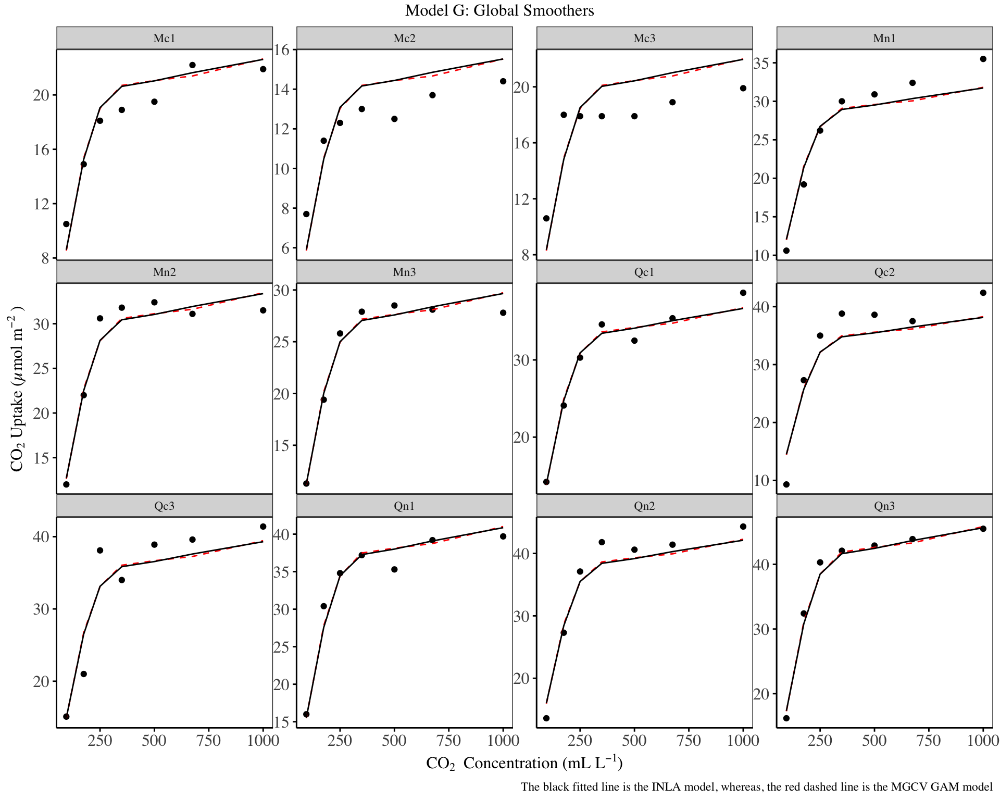
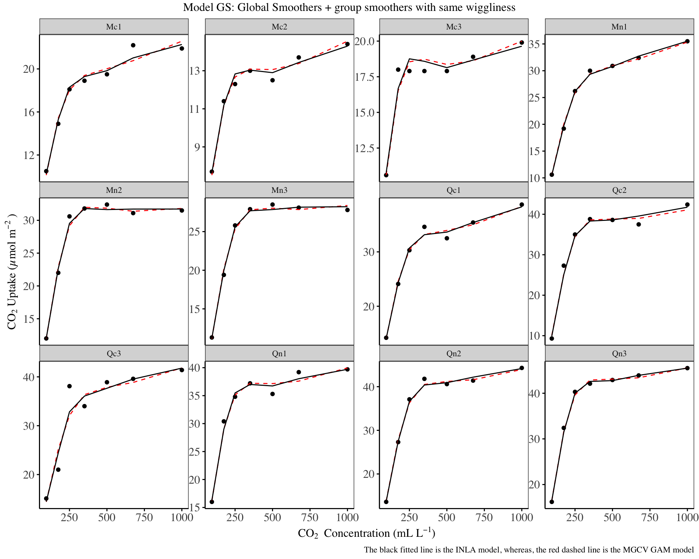
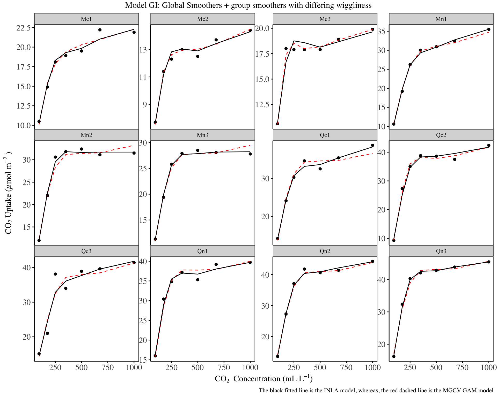
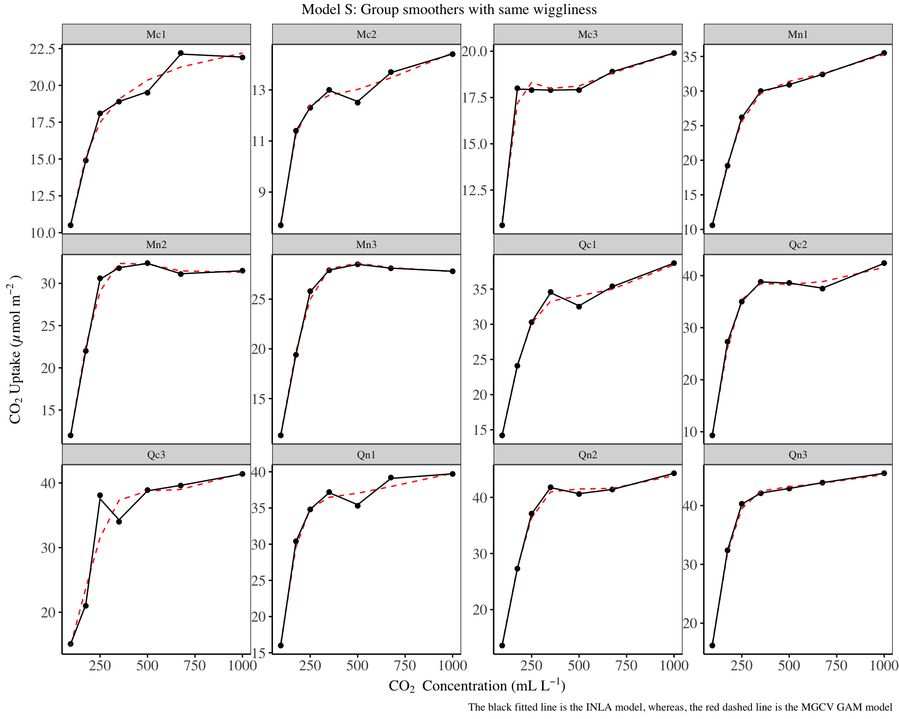
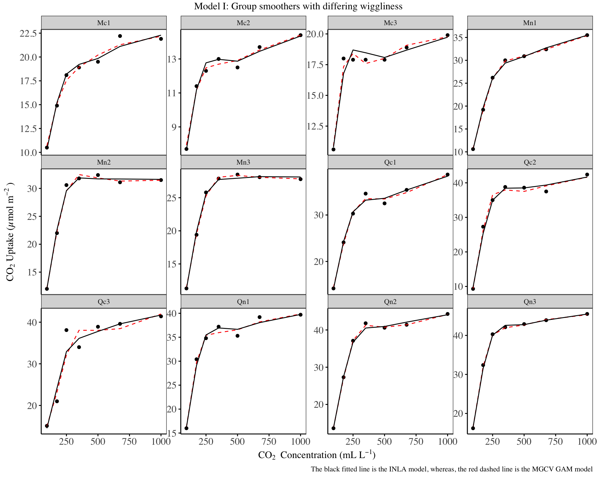

| Variable | Descriptions |
|---|---|
| Plant | an ordered factor with levels Qn1 < Qn2 < Qn3 < … < Mc1 giving a unique identifier for each plant. |
| Type | a factor with levels Quebec Mississippi giving the origin of the plant |
| Treatment | a factor with levels nonchilled chilled |
| conc | a numeric vector of ambient carbon dioxide concentrations (mL/L). |
| uptake | a numeric vector of carbon dioxide uptake rates |
Image copyrights: https://m-clark.github.io/generalized-additive-models/introduction.html
GAMs and HGAMs
Generalized Additive Models (GAMs) are a powerful extension of Generalized Linear Models (GLMs), as they offer the flexibility to incorporate non-linear effects of covariates using smooth functions within the GLM framework.
The model formulation for a GAM can be expressed as: \[E(y_i) = \mu_i\] \[g(\mu_i) = \eta_i = \sum_{k=0}^{p_l} \beta_kz_{ik} + \sum_{j=1}^{p_s} s_j(x_{ij})\]
The intercept has been absorbed into the linear predictor, and takes the coefficient for \(beta_0\)
\(y_i\) is the response variable
\(\mu\) is the mean of the response
\(g(\cdot)\) is the link function
\(\eta_i\) is the linear predictor, which in this case is a structural additive predictor.
\(\beta_i\) are the regression coefficients for the linear terms
\(s_j(\cdot)\) are smooth functions of the covariates \(x_j\)
\(p_l\) is the number of covariates modelled using the linear functions, and \(p_s\) is the number of covariates modelled using the smooth functions.
The primary distinction between GLMs and GAMs lies in the latter’s ability to incorporate covariates into the model using smooth functions, which are often non-linear. This extension proves particularly valuable when dealing with covariates that exhibit non-linear relationships with the response variable.
In the traditional GLM framework, analysts typically attempt to account for non-linearity using power functions, trigonometric functions, polynomials, or predefined splines1. However, these approaches may often fall short in capturing complex relationships. GAMs address this limitation by utilizing a wide range of flexible smooth functions based on various basis expansions2.
1 think the splines::ns or splines::bs in R
2 See the ?mgcv::s or smooth.terms{mgcv}
The adaptability of GAMs allows for more accurate modeling of complex, non-linear relationships between predictors and the response variable, potentially leading to improved model fit and predictive performance compared to their linear counterparts. An often helpful use case of GAMs are in incorporating spatial effects into models.
A natural extension to the standard GAM, is to build GAM models, where the smooth relationships between covariates and the response are allowed to vary differently by groups in the data. This is what gives rise to the hierarchical GAMs.
INLA
The Integrated Nested Laplace Approximation (INLA) is an approximate method for Bayesian inference that offers a fast and efficient alternative to traditional Markov Chain Monte Carlo (MCMC) techniques. INLA aims to provide fast and accurate approximations of posterior distributions for a wide class of latent Gaussian models.
Briefly, for a response variable \(y_i\) belonging to the exponential family, where its mean \(\mu_i\) is linked to a structural additive predictor \(\eta_i\) of the form3:
3 Again, the intercept has been absorbed into the summation of the linear predictor
\[\eta_i = \sum_{k=0}^{n_\beta}\beta_kz_{ki} + \sum_{j=1}^{n_f}f^{(j)}(u_{ji}) + \epsilon_i\]
Here:
\(f^{(j)}(\cdot)\) are unknown functions of certain covariates
\(\beta_k\) represent the linear effects of certain covariates
\(\epsilon_i\) are the unstructured error terms
Latent gaussian models are a subset of all bayesian models with the structural additive predictor as the one above, where a gaussian prior is assigned to \(\ f^{(j)}(\cdot), \ \beta_k, \ and \ \epsilon_i\).
This approach is particularly well-suited for linear, generalized linear and generalized additive models, even those with spatial, temporal, as well as hierarchical structures. This makes INLA an excellent choice for implementing Hierarchical Generalized Additive Models (HGAMs). INLA’s computational efficiency allows for the analysis of complex models and large datasets that might be computationally prohibitive with MCMC methods.
The {R-INLA} package brings this methodology to R. For those interested in a comprehensive yet accessible introduction to INLA and its implementation in R, Virgilio Gómez-Rubio (2020)4 and Wang et al. (2018)5 serve as excellent resources.
4 Gómez-Rubio, Virgilio (2020). Bayesian Inference with INLA. Chapman & Hall/CRC Press. Boca Raton, FL.
5 Wang, X., Yue, Y. R., & Faraway, J. J. (2018). Bayesian regression modeling with INLA. Chapman and Hall/CRC.
In INLA, the shape of \(f(\cdot)\) , the smooth terms are commonly represented using the following functions:
\(AR(p)\): Autoregressive models of order p, with p being at most 10.
\(RW(u)\): Random walk terms. In INLA, currently only random walks of order 1 and 2 are implemented.
For irregularly spaced data, Stochastic Partial Differential Equation (SPDE) are implemented in INLA.
For auto-regressive models:
\[y_t = \alpha + u_t + \varepsilon_t, \quad t = 1, \ldots, n\]
\[u_1 \sim N(0, \tau_u(1-\rho^2)^{-1})\]
\[u_t = \rho u_{t-1} + \epsilon_t, \quad t = 2, \ldots, n\]
\[\varepsilon_t \sim N(0, \tau_\varepsilon), \quad t = 1, \ldots, n\]
For random walk models (here order: 1) :
\[y_t = \alpha + u_t + \varepsilon_t, \quad t = 1, \ldots, n\]
\[u_t - u_{t-1} \sim N(0, \tau_u), \quad t = 2, \ldots, n\]
\[\varepsilon_t \sim N(0, \tau_\varepsilon), \quad t = 1, \ldots, n\]
More information on the derivations and motivations for using the above can be found in Virgilio Gómez-Rubio (2020) Chpt. 96.
6 https://becarioprecario.bitbucket.io/inla-gitbook/ch-smoothing.html
Models
In this blog, I will try to replicate the models described in this paper using the INLA methodology:
Pedersen EJ, Miller DL, Simpson GL, Ross N. 2019. Hierarchical generalized additive models in ecology: an introduction with mgcv. PeerJ 7:e6876 DOI 10.7717/peerj.6876
This excellent paper, provides an overview of the connection between hierarchical GLMs and GAMs, their similarities in terms of how they fit highly variable models to data, especially those involving group specific terms (intercepts and slopes), and their applications to ecology.
A key advantage of HGAMs is the ability to provide sensible estimates, in cases where each group in the data does not have sufficient data points (building seperate models for different groups could lead to noisy predictions), the hierarchical component also allows us to build models that are able to give better predictions in different groups, as well as overall-y on average (building models while ignoring any hierarchy/grouping present in the data leads to poor predictions for any group).
The specific models considered in the paper are classified into the following:
Model G: A single common smoother for all observations i.e a global smoother.
Model GS: A global smoother plus group-level smoothers that have the same wiggliness.
Model GI: A global smoother plus group-level smoothers with differing wiggliness.
Model S: Group-specific smoothers having same wiggliness. This model does not contain a global smoother.
Model I: Group-specific smoothers with different wiggliness. This model does not contain a global smoother.
Dataset 1: datasets::CO2
An experiment on the cold tolerance of a particular grass species, was conducted to measure carbon dioxide (\(CO_2\)) absorption in plants from two different regions. Twelve plants were used in the study: six sourced from Quebec and six from Mississippi. The researchers assessed the plants’ \(CO_2\) uptake at various concentrations of atmospheric carbon dioxide. As part of the experimental design, half of the plant specimens were subjected to overnight chilling prior to data collection. This resulted in a total of 84 observations.
For the HGAM paper, a slight modification was done to include a variable Plant_uo, which is an unordered factor variable, and is a replication of the Plant variable included in the dataset. The response variable is the log of Uptake.
Model G: Global smoother
In this first model, we include a random intercept for the plant identifiers, and use the RW2 smoother for log concentration.7
7 In the paper, log-uptake is modelled using two smoothers: a TPRS(smooth.construct.tp.smooth.spec {mgcv}) of log-concentration (conc), and a random effect smooth(smooth.construct.re.smooth.spec {mgcv}) for the plant identifier (plant_uo).
# mgcv model
g_mgcv <- gam(log_uptake ~ s(log_conc, k=5, bs="tp") + s(plant_uo, k=12, bs="re"),
data=d1, method="REML", family="gaussian")
# inla model
g_inla <- inla(log_uptake ~ f(log_conc, model = "rw2") + f(plant_uo, model = "iid"),
family = "gaussian", data = d1,
control.compute = list(dic = T, waic = T))
d1 |>
mutate(
mgcv = predict(g_mgcv, type = 'response') |> as.numeric() |> exp(),
inla = g_inla$summary.fitted.values$mean |> exp()
) |>
ggplot() +
geom_point(aes(x = conc, y = uptake)) +
geom_line(aes(x = conc, y = mgcv), col = 'red', lty = 'dashed') +
geom_line(aes(x = conc, y = inla), col = 'black') +
facet_wrap( ~ plant_uo, scales = 'free_y') +
labs(
title = "Model G: Global Smoothers",
x = expression('CO'[2]~''~'Concentration (mL L'^-1*')'),
y = expression('CO'[2]~'Uptake (µmol m'^-2~')'),
caption = "The black fitted line is the INLA model, whereas, the red dashed line is the MGCV GAM model"
) +
theme_bw() +
my_theme
From the fitted model, the global smoothing is adequate, although it under estimates the log-uptake in some plant species such as Qn2, and over estimates the log-uptake in plant species such as Mc2 and Mc3. It is clear that the RW2 and the TPRS model have similar predictions.
Model GS: A global smoother and group-level smoothers with same wiggliness
This second model resembles a mixed effect model with varying slopes. In the model - on top of the global smoother, each group is allowed to have its own smoother for a given variable, however the smoothers are estimated using one parameter for all groups (yielding the same wiggliness), and are penalized towards zero. The mgcv implementation of this is in the smooth function fs for factor-smoother interaction. This leads to a differing shape in the functional response of each group, as shown below.
The R-INLA implementation, will rely on using the `replicate`` function8.
8 Note that in mgcv, we do not include the random intercepts smooth, as they are included in the factor-smooth interactions.
# mgcv model
gs_mgcv <- gam(log_uptake ~
s(log_conc, k = 5, m = 2) +
s(log_conc, plant_uo, k = 5, bs = "fs", m = 2),
data=d1, method="REML")
# inla model
gs_inla <- inla(log_uptake ~
f(plant_uo, model="iid") +
f(log_conc_global, model = 'rw2') +
f(log_conc, model = "rw2", replicate = plant_uo_id),
family = "gaussian",
data = d1 |>
mutate(plant_uo_id = as.integer(plant_uo),
log_conc_global = log_conc),
control.compute = list(dic = T, waic = T))
d1 |>
mutate(
mgcv = predict(gs_mgcv, type = 'response') |> as.numeric() |> exp(),
inla = gs_inla$summary.fitted.values$mean |> exp(),
) |>
ggplot() +
geom_point(aes(x = conc, y = uptake)) +
geom_line(aes(x = conc, y = mgcv), col = 'red', lty='dashed') +
geom_line(aes(x = conc, y = inla), col = 'black') +
facet_wrap(~plant_uo, scales = 'free_y') +
labs(
title = "Model GS: Global Smoothers + group smoothers with same wiggliness",
caption = "The black fitted line is the INLA model, whereas, the red dashed line is the MGCV GAM model",
x = expression('CO'[2]~''~'Concentration (mL L'^-1*')'),
y = expression('CO'[2]~'Uptake (µmol m'^-2~')'))+
theme_bw() +
my_theme
The above fitted lines show an improvement over the model G, and the INLA and mgcv predictions are also close.
Model GI: A global smoother plus group-level smoothers with differing wiggliness
This is an extension of the G model above, where each group smoother is allowed to have its own parameters, which yields a model where the smoothers have differing wiggliness. This is an important extension if there is reason to believe that each group smooth differs in how wiggly it is.
This is achieved in INLA using the group argument when specifying functions.
# mgcv model
gi_mgcv <- gam(log_uptake ~
s(plant_uo, bs = 're', k = 12) +
s(log_conc, k = 5, m = 2, bs = 'tp') +
s(log_conc, k = 5, m = 1, bs = "tp", by = plant_uo),
data=d1, method="REML")
# inla model
gi_inla <- inla(log_uptake ~
f(plant_uo, model="iid") +
f(log_conc_global, model = "rw2") +
f(log_conc, model = "rw2", group = plant_uo_id),
family = "gaussian",
data = d1 |>
mutate(plant_uo_id = as.integer(plant_uo),
log_conc_global = log_conc),
control.compute = list(dic = T, waic = T))
d1 |>
mutate(
mgcv = predict(gi_mgcv, type = 'response') |> as.numeric() |> exp(),
inla = gi_inla$summary.fitted.values$mean |> exp(),
) |>
ggplot() +
geom_point(aes(x = conc, y = uptake)) +
geom_line(aes(x = conc, y = mgcv), col = 'red', lty='dashed') +
geom_line(aes(x = conc, y = inla), col = 'black') +
facet_wrap(~plant_uo, scales = 'free_y') +
labs(
title = "Model GI: Global Smoothers + group smoothers with differing wiggliness",
caption = "The black fitted line is the INLA model, whereas, the red dashed line is the MGCV GAM model",
x = expression('CO'[2]~''~'Concentration (mL L'^-1*')'),
y = expression('CO'[2]~'Uptake (µmol m'^-2~')'))+
theme_bw() +
my_theme
There isn’t much difference as compared to the GS model above, however, the GI model and mgcv HGAM model have close predictions. The GI model is an improvement over the model G.
Models without global smoothers (Model S and I)
In this section, we focus on implementing hierarchical generalized additive models (HGAMs) without global smooths. By omitting the global smoother, we remove the constraint that penalizes deviations of group-level smooths from a common smooth This is particularly important when we believe that the group-level smooths may not align with or may differ significantly from a common global pattern.
Model S is an instance of model GS above, without the global smooth, and model I is an instance of model GI above, without the global smooth.
A drawdown of using models without global smooths (model S and I) is that, in instances where the number of data points is small in each group, then the results from the models S & I will be more variable than those from model GS and GI. This increased variability stems from the fact that group-specific smooths in models S & I rely solely on within-group data, without the stabilizing influence of a global smooth or leveraged information across all groups.
Another drawdown is: without global smooths, it is not possible to predict the response variables for groups not included in the training set, and it is also not possible to compute an average effect of the response variable.
Model S
# mgcv model
s_mgcv <- gam(log_uptake ~
s(log_conc, plant_uo, k = 5, bs = "fs", m = 2),
data=d1, method="REML")
# inla model
s_inla <- inla(log_uptake ~
f(plant_uo, model="iid") +
f(log_conc, model = "rw2", replicate = plant_uo_id),
family = "gaussian",
data = d1 |>
mutate(plant_uo_id = as.integer(plant_uo)),
control.compute = list(dic = T, waic = T))
d1 |>
mutate(
mgcv = predict(s_mgcv, type = 'response') |> as.numeric() |> exp(),
inla = s_inla$summary.fitted.values$mean |> exp(),
) |>
ggplot() +
geom_point(aes(x = conc, y = uptake)) +
geom_line(aes(x = conc, y = mgcv), col = 'red', lty='dashed') +
geom_line(aes(x = conc, y = inla), col = 'black') +
facet_wrap(~plant_uo, scales = 'free_y') +
labs(
title = "Model S: Group smoothers with same wiggliness",
caption = "The black fitted line is the INLA model, whereas, the red dashed line is the MGCV GAM model",
x = expression('CO'[2]~''~'Concentration (mL L'^-1*')'),
y = expression('CO'[2]~'Uptake (µmol m'^-2~')'))+
theme_bw() +
my_theme
The predictions from the INLA model, are quite close to the actual values for the response variable.
Model I
# mgcv model
i_mgcv <- gam(log_uptake ~
s(plant_uo, bs = 're', k = 12) +
s(log_conc, k = 5, m = 1, bs = "tp", by = plant_uo),
data=d1, method="REML")
# inla model
i_inla <- inla(log_uptake ~
f(plant_uo, model="iid") +
f(log_conc, model = "rw2", group = plant_uo_id),
family = "gaussian",
data = d1 |>
mutate(plant_uo_id = as.integer(plant_uo)),
control.compute = list(dic = T, waic = T))
d1 |>
mutate(
mgcv = predict(i_mgcv, type = 'response') |> as.numeric() |> exp(),
inla = i_inla$summary.fitted.values$mean |> exp(),
) |>
ggplot() +
geom_point(aes(x = conc, y = uptake)) +
geom_line(aes(x = conc, y = mgcv), col = 'red', lty='dashed') +
geom_line(aes(x = conc, y = inla), col = 'black') +
facet_wrap(~plant_uo, scales = 'free_y') +
labs(
title = "Model I: Group smoothers with differing wiggliness",
caption = "The black fitted line is the INLA model, whereas, the red dashed line is the MGCV GAM model",
x = expression('CO'[2]~''~'Concentration (mL L'^-1*')'),
y = expression('CO'[2]~'Uptake (µmol m'^-2~')'))+
theme_bw() +
my_theme
The predictions from the INLA model are closer to those of the MGCV HGAMs for certain groups.
Comparisons
In this section, we compare the fitted models (G, S, I, GS, GI) using the Deviance Information Criterion, as shown below:
data.frame(
model = c("Model G", "Model S", "Model I", "Model GS", "Model GI"),
DIC = list(g_inla, s_inla, i_inla, gs_inla, gi_inla) |> lapply(FUN = \(x) x$dic$dic) |> unlist(),
WAIC = list(g_inla, s_inla, i_inla, gs_inla, gi_inla) |> lapply(FUN = \(x) x$waic$waic) |> unlist()
) |>
knitr::kable()| model | DIC | WAIC |
|---|---|---|
| Model G | -116.1953 | -111.2939 |
| Model S | -444.0115 | -448.7367 |
| Model I | -215.8004 | -214.5594 |
| Model GS | -210.8557 | -209.1680 |
| Model GI | -209.9247 | -208.6807 |
In the HGAM paper, the models from best fitting to worst are: I > S > GI > GS > G, with model I and S being so close in AIC values.
From the table above, model S seems to be the best fitting model, as indicated by the lowest DIC & WAIC values.
The order of fit, from best fitting to worst is: S > I > GS > GI > G. However, the performance of model GS and GI are so close.
This indicates that, for the CO2 dataset:
There is a compelling reason for including group level smoothing. This is because the model without group level smooths (model G) performs the worst as compared to the rest of the models.
There is no need for independent group specific smooths (model GI), as the performance gain from using common/shared group smooths (model GS) is minimal.
There is no need for a global smooth, as model S & I have better performance as compared to all models which included a global smooth
As model S has better performance than I, this implies that there is a common smooth structure in how uptake is affected by changes in concentration across all plant specimens, and that the additional complexity of plant-specific smooth terms is not justified by the data.
References
Books
Gómez-Rubio, V. (2020). Bayesian inference with INLA. Chapman and Hall/CRC.
Wang, X., Yue, Y. R., & Faraway, J. J. (2018). Bayesian regression modeling with INLA. Chapman and Hall/CRC.
Wickham, H. (2016). ggplot2: Elegant Graphics for Data Analysis. Springer-Verlag New York.
Wood, S. N. (2017). Generalized Additive Models: An Introduction with R (2nd ed.). Chapman and Hall/CRC.
Articles
Pedersen, E. J., Miller, D. L., Simpson, G. L., & Ross, N. (2019). Hierarchical generalized additive models in ecology: An introduction with mgcv. PeerJ, 7, e6876.
Rue, H., Martino, S., & Chopin, N. (2009). Approximate Bayesian inference for latent Gaussian models using integrated nested Laplace approximations (with discussion). Journal of the Royal Statistical Society: Series B (Statistical Methodology), 71(2), 319–392.
Wood, S. N. (2003). Thin-plate regression splines. Journal of the Royal Statistical Society: Series B (Statistical Methodology), 65(1), 95–114.
Software
- R Core Team (2023). R: A Language and Environment for Statistical Computing. R Foundation for Statistical Computing, Vienna, Austria. Retrieved from https://www.R-project.org/
sessionInfo()R version 4.3.2 (2023-10-31)
Platform: aarch64-apple-darwin20 (64-bit)
Running under: macOS Ventura 13.6.6
Matrix products: default
BLAS: /Library/Frameworks/R.framework/Versions/4.3-arm64/Resources/lib/libRblas.0.dylib
LAPACK: /Library/Frameworks/R.framework/Versions/4.3-arm64/Resources/lib/libRlapack.dylib; LAPACK version 3.11.0
locale:
[1] en_US.UTF-8/en_US.UTF-8/en_US.UTF-8/C/en_US.UTF-8/en_US.UTF-8
time zone: Africa/Nairobi
tzcode source: internal
attached base packages:
[1] stats graphics grDevices utils datasets methods base
other attached packages:
[1] mgcv_1.9-1 nlme_3.1-164 INLA_24.02.09 sp_2.1-3 Matrix_1.6-5
[6] ggplot2_3.5.1 dplyr_1.1.4 pacman_0.5.1
loaded via a namespace (and not attached):
[1] utf8_1.2.4 generics_0.1.3 class_7.3-22 fmesher_0.1.5
[5] KernSmooth_2.23-22 lattice_0.22-6 digest_0.6.35 magrittr_2.0.3
[9] evaluate_0.24.0 grid_4.3.2 fastmap_1.2.0 jsonlite_1.8.8
[13] e1071_1.7-14 DBI_1.2.2 fansi_1.0.6 scales_1.3.0
[17] cli_3.6.2 rlang_1.1.4 units_0.8-5 munsell_0.5.1
[21] splines_4.3.2 withr_3.0.0 yaml_2.3.8 tools_4.3.2
[25] parallel_4.3.2 MatrixModels_0.5-3 colorspace_2.1-0 vctrs_0.6.5
[29] R6_2.5.1 proxy_0.4-27 lifecycle_1.0.4 classInt_0.4-10
[33] htmlwidgets_1.6.4 pkgconfig_2.0.3 pillar_1.9.0 gtable_0.3.5
[37] glue_1.7.0 Rcpp_1.0.13 sf_1.0-16 xfun_0.45
[41] tibble_3.2.1 tidyselect_1.2.1 rstudioapi_0.16.0 knitr_1.47
[45] farver_2.1.2 htmltools_0.5.8.1 rmarkdown_2.27 labeling_0.4.3
[49] compiler_4.3.2